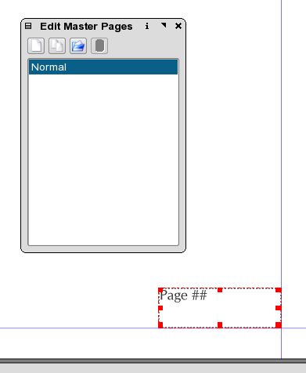

Adding automatically incrementing page numbers is a two step process, but once mastered, quite simple and reliable. There are two different methods which can be used independently or together. The first is to draw a text frame, click to get into edit mode and then go: Insert > Character > Insert Page Number. This will only add the page number to the current selected page. The second uses Master Pages to enable automatic page numbering.
Scribus uses a special place holder within Master Pages to indicate page numbers and allows them to be automatically included in your document without concern for moving, importing or deleting pages.
With your chosen document open, go Edit > Master Pages If you have not created any other Master Pages, then there will be just one named Normal.
Next, create a text frame where you want the page numbers to go. Then, enter edit mode by double clicking on the text frame and place the pound # or hash symbol as it is known. This most easily done via Insert > Character > Insert Page Number Use one, two or three symbols depending on the number of pages needed. For 1-9 pages use a single #, for 11 - 99 pages use two # #. Then save the Master Page, by closing the Master Pages dialog and return to the main document.
|  |
If you have more than one Master Page, you will need to add these placeholders to each Master Page. You can apply styles, default font and fonts sizes as you wish as well, just like a normal text frame.